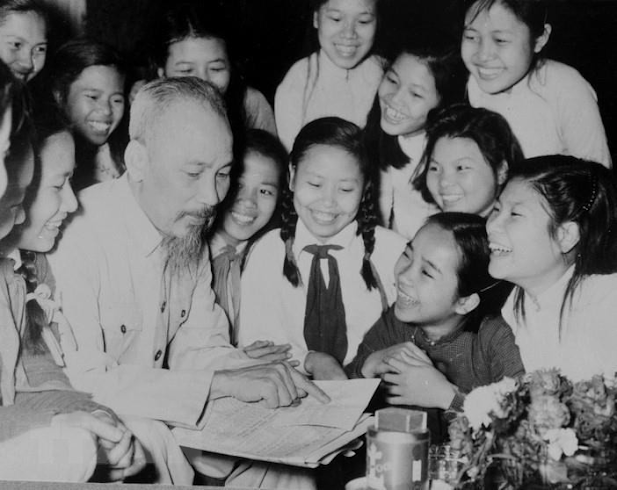

1. Đặt vấn đề: Vì sao phải bàn về "chuẩn mực sống đẹp"?
Trong môi trường đại học hiện đại, nơi tri thức và công nghệ tăng trưởng từng ngày, một câu hỏi luôn khiến nhiều bạn trẻ trăn trở: Làm sao để vừa vững chuyên môn, vừa giữ được một nhân cách đẹp và trách nhiệm với xã hội?
Trước áp lực điểm số, sự tiện lợi của trí tuệ nhân tạo (AI) và vòng xoáy mạng xã hội, chúng ta đôi khi dễ rơi vào sự vội vã, ỷ lại và quên mất những giá trị cốt lõi. Học tập và làm theo tư tưởng, đạo đức, phong cách Hồ Chí Minh chính là chiếc la bàn soi đường gần gũi nhất, giúp mỗi sinh viên tự rèn giũa bản thân từ những việc nhỏ bé, thiết thực mỗi ngày.

2. Kỷ luật – Đúng hẹn: Xương sống của sự tiến bộ
Bác Hồ luôn xem đúng giờ là biểu hiện cao nhất của sự tôn trọng. Trong những năm tháng kháng chiến, dù trời mưa tầm tã, đường rừng lầy lội, Bác vẫn đến lớp chỉnh huấn đúng hẹn, quần xắn quá gối, áo mưa ướt sũng. Bác nói một câu giản dị mà thấm thía:
Là sinh viên ngành Công nghệ Thông tin tại UIT, bài học về sự đúng giờ và kỷ luật nhắc nhở mình mỗi ngày: vào giảng đường sớm 5 phút, nộp đồ án đúng hạn, tôn trọng tiến độ khi làm việc nhóm. Trong lập trình, kỷ luật còn là tính trung thực: viết code cẩn thận, tôn trọng bản quyền mã nguồn và bảo vệ an toàn thông tin người dùng.

3. Giản dị – Tiết kiệm: Ít ồn ào, nhiều hiệu quả
Suốt cuộc đời, Bác luôn giữ nếp sống mộc mạc: chiếc áo kaki sờn vai, đôi dép cao su giản dị, căn nhà sàn gỗ đơn sơ. Bác để lại một quan niệm sống sâu sắc: “Cái đẹp nằm ở sự vừa đủ, không ở sự cầu kỳ.”
Đối với sinh viên hôm nay, học Bác từ việc tiết kiệm không chỉ là tắt điện khi rời phòng, mang theo bình nước cá nhân, mà còn là tiết kiệm thời gian – tránh sa đà vào những nội dung độc hại trên mạng, quản lý quỹ thời gian biểu để học tập và rèn luyện thể chất một cách hiệu quả.

4. Tự học suốt đời: Tinh thần của người làm công nghệ
Chủ tịch Hồ Chí Minh là tấm gương sáng ngời về tinh thần tự học. Bác tự học ngoại ngữ và kiến thức thời đại khi bôn ba khắp năm châu bằng lao động thực tế. Bác từng dặn dò:
Ngành công nghệ thay đổi từng ngày, các công cụ và thuật toán mới liên tục ra đời. Nếu không tự học, người làm công nghệ sẽ rất nhanh bị thụt lùi. Học tập tinh thần của Bác, mỗi sinh viên cần chủ động nghiên cứu tài liệu gốc, rèn luyện tư duy độc lập và không phụ thuộc máy móc vào AI.
5. Phụng sự cộng đồng: "Học để làm việc, giúp dân, giúp nước"
Trong một lần Bác đến thăm lớp Bình dân học vụ sau Cách mạng Tháng Tám, khi một học viên trả lời "Thưa Bác, học để biết chữ ạ", Bác mỉm cười nói:
Câu nói ấy nhắc nhở chúng mình rằng tấm bằng đại học hay chuyên môn giỏi chỉ thực sự có ý nghĩa trọn vẹn khi nó mang lại giá trị cho cộng đồng. Sinh viên công nghệ có thể phụng sự bằng những việc thiết thực: hướng dẫn bạn học cùng tiến, hỗ trợ số hóa tài liệu, hoặc tạo ra những phần mềm nhỏ giúp ích cho xã hội.

6. Mô hình giải pháp: "3 Tự – 3 Tiên phong" cho sinh viên UIT
Từ những trải nghiệm của bản thân tại Trường Đại học Công nghệ Thông tin (ĐHQG-HCM), mình xin chia sẻ ý tưởng về mô hình hành động đơn giản, gần gũi mang tên "3 Tự – 3 Tiên phong":
MÔ HÌNH HÀNH ĐỘNG "3 TỰ – 3 TIÊN PHONG"
Học tập và làm theo tư tưởng, đạo đức, phong cách Hồ Chí Minh
🎯 TRỤ CỘT "3 TỰ" (RÈN MÌNH)
- Tự học suốt đời: Chủ động tìm tòi tài liệu, nâng cao trình độ chuyên môn, làm chủ công nghệ mới.
- Tự rèn kỷ luật: Đi học đúng giờ, nộp bài đúng hẹn, trung thực trong thi cử và nghiên cứu.
- Tự soi & tự sửa: Nhìn nhận khuyết điểm của bản thân mỗi tuần để ngày một hoàn thiện hơn.
🚀 TRỤ CỘT "3 TIÊN PHONG" (PHỤNG SỰ)
- Tiên phong số: Đem kiến thức IT hỗ trợ cộng đồng, phổ cập kỹ năng số cho người dân.
- Tiên phong sáng tạo: Tham gia phát triển các sản phẩm công nghệ phục vụ cộng đồng.
- Tiên phong văn hóa mạng: Chia sẻ thông tin tích cực, xây dựng môi trường mạng văn minh.

7. Lời kết
Học theo Bác không phải điều gì xa vời. Mỗi sinh viên chúng mình đều có thể bắt đầu ngay từ hôm nay: bằng một buổi học đúng giờ, một lời hứa giữ trọn, một tinh thần tự học kiên trì và một tấm lòng muốn đem công nghệ phục vụ mọi người.